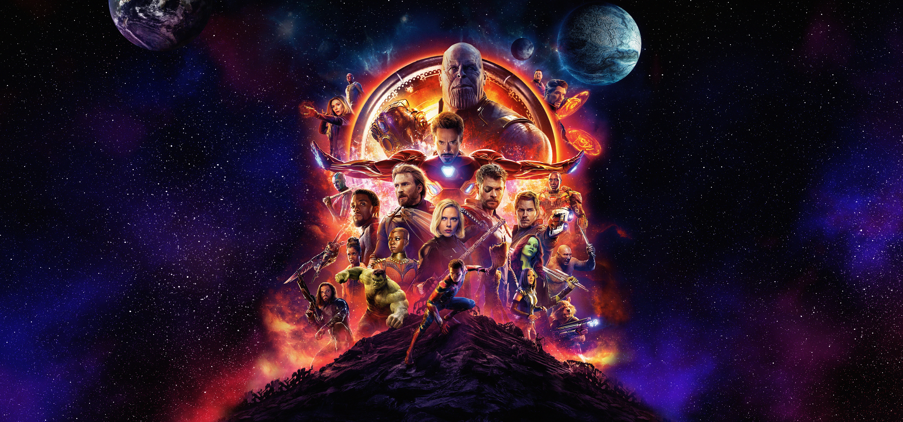
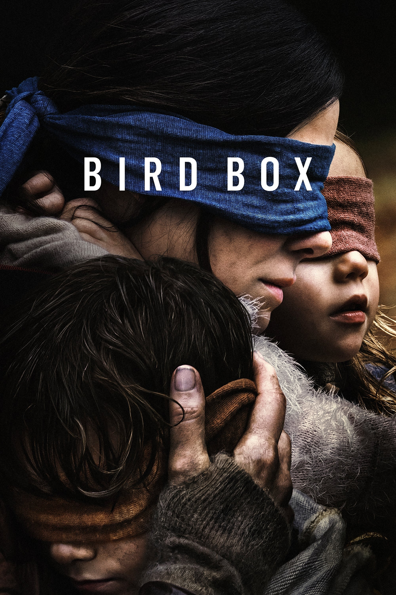
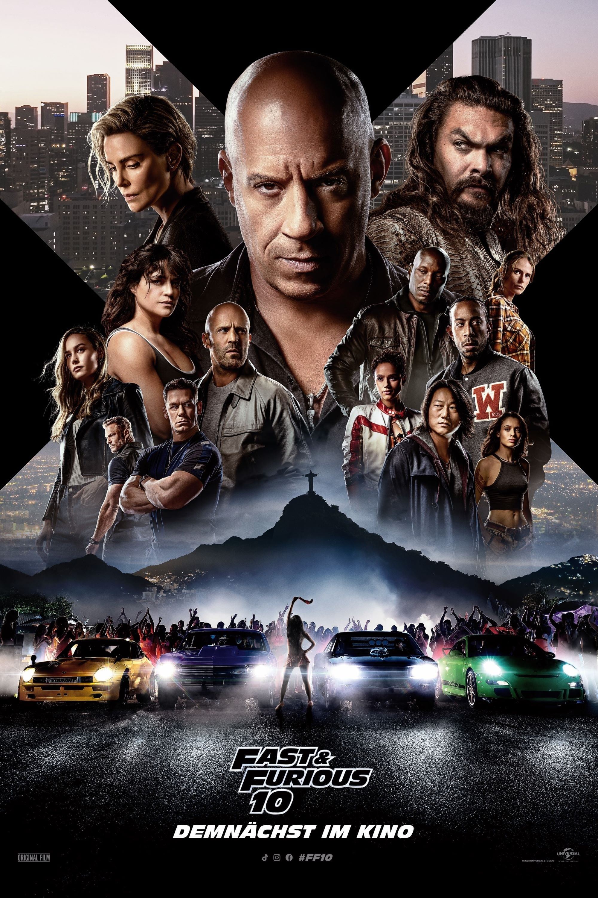

Relevanz
Meist gesehen
Beste Bewertung
Neueste

Avenger: EndgameDer Film ist der 10. der dritten Phase des Marvel Cinematic Universe und spielt nach den Ereignissen von Avengers: Infinity War, Ant-Man and the Wasp, Captain Marvel und enthält eine Fortsetzung mit Spider-Man: Far From Home. In den Hauptrollen sind Robert Downey jr., Chris Evans, Mark Ruffalo, Chris Hemsworth, Scarlett Johansson, Jeremy Renner, Don Cheadle, Brie Larson, Karen Gillan, Danai Gurira, Bradley Cooper und Josh Brolin zu sehen. US-Kinostart war der 22. April 2019, in Deutschland startete der Film am 24. April 2019.

BirdboxNachdem unsichtbare Kreaturen weite Teile der Weltbevölkerung ausgelöscht haben, indem sie alle, die sie erblicken, dazu bringen, sich das Leben zu nehmen, irren Sebastian (Mario Casas) und seine Tochter Anna (Alejandra Howard) durch die menschenleeren Straßen Barcelonas. Das Tragen einer Augenbinde scheint das einzige zu sein, was gegen die Berdrohung hilft - neben der Anwesenheit von Tieren, die die Gefahr früher wittern und somit vor ihr warnen können. Doch während Sebastian und Anna sich mit anderen Überlebenden verbünden und sich gemeinsam mit ihnen auf den Weg zu einem sicheren Zufluchtsort machen, reift eine Bedrohung heran, die noch schlimmer ist, als die mysteriösen Wesen.

Fast and Furious 10Dominic Toretto (Vin Diesel) ahnt nicht, dass seine Taten, die Jahre zurückliegen, tiefe Spuren bei dem mittlerweile mächtigen Dante (Jason Momoa) hinterlassen haben. Dieser sinnt nun auf Rache und will die ganze Toretto-Familie auseinanderbringen. Es entbrennt eine Rachegeschichte, die alle Mitglieder der Original-Crew, aber auch Deckard Shaw (Jason Statham), Bruder Jakob (John Cena) sowie den Neuzugang Tess (Brie Larson) auf den Plan ruft. Diese haben fortan alle Hände zu tun, um sich gegen den Gegenspieler sowie dessen Gefolgschaft samt Cipher (Charlize Theron) und Aimes (Alan Ritchson) zur Wehr setzen zu können. Da Dom nicht jeden aus der großen Familie beschützen kann und der rachsüchtige Rivale vor nichts zurückschreckt, wird er vor die schwierigste Wahl seines Lebens gestellt: Wen wird er retten?
Avenger: Endgame
Der Film ist der 10. der dritten Phase des Marvel Cinematic Universe und spielt nach den Ereignissen von Avengers: Infinity War, Ant-Man and the Wasp, Captain Marvel und enthält eine Fortsetzung mit Spider-Man: Far From Home. In den Hauptrollen sind Robert Downey jr., Chris Evans, Mark Ruffalo, Chris Hemsworth, Scarlett Johansson, Jeremy Renner, Don Cheadle, Brie Larson, Karen Gillan, Danai Gurira, Bradley Cooper und Josh Brolin zu sehen. US-Kinostart war der 22. April 2019, in Deutschland startete der Film am 24. April 2019.
Birdbox
Nachdem unsichtbare Kreaturen weite Teile der Weltbevölkerung ausgelöscht haben, indem sie alle, die sie erblicken, dazu bringen, sich das Leben zu nehmen, irren Sebastian (Mario Casas) und seine Tochter Anna (Alejandra Howard) durch die menschenleeren Straßen Barcelonas. Das Tragen einer Augenbinde scheint das einzige zu sein, was gegen die Berdrohung hilft - neben der Anwesenheit von Tieren, die die Gefahr früher wittern und somit vor ihr warnen können. Doch während Sebastian und Anna sich mit anderen Überlebenden verbünden und sich gemeinsam mit ihnen auf den Weg zu einem sicheren Zufluchtsort machen, reift eine Bedrohung heran, die noch schlimmer ist, als die mysteriösen Wesen.
Fast and Furious 10
Dominic Toretto (Vin Diesel) ahnt nicht, dass seine Taten, die Jahre zurückliegen, tiefe Spuren bei dem mittlerweile mächtigen Dante (Jason Momoa) hinterlassen haben. Dieser sinnt nun auf Rache und will die ganze Toretto-Familie auseinanderbringen. Es entbrennt eine Rachegeschichte, die alle Mitglieder der Original-Crew, aber auch Deckard Shaw (Jason Statham), Bruder Jakob (John Cena) sowie den Neuzugang Tess (Brie Larson) auf den Plan ruft. Diese haben fortan alle Hände zu tun, um sich gegen den Gegenspieler sowie dessen Gefolgschaft samt Cipher (Charlize Theron) und Aimes (Alan Ritchson) zur Wehr setzen zu können. Da Dom nicht jeden aus der großen Familie beschützen kann und der rachsüchtige Rivale vor nichts zurückschreckt, wird er vor die schwierigste Wahl seines Lebens gestellt: Wen wird er retten?
Avenger: Endgame
Der Film ist der 10. der dritten Phase des Marvel Cinematic Universe und spielt nach den Ereignissen von Avengers: Infinity War, Ant-Man and the Wasp, Captain Marvel und enthält eine Fortsetzung mit Spider-Man: Far From Home. In den Hauptrollen sind Robert Downey jr., Chris Evans, Mark Ruffalo, Chris Hemsworth, Scarlett Johansson, Jeremy Renner, Don Cheadle, Brie Larson, Karen Gillan, Danai Gurira, Bradley Cooper und Josh Brolin zu sehen. US-Kinostart war der 22. April 2019, in Deutschland startete der Film am 24. April 2019.
Birdbox
Nachdem unsichtbare Kreaturen weite Teile der Weltbevölkerung ausgelöscht haben, indem sie alle, die sie erblicken, dazu bringen, sich das Leben zu nehmen, irren Sebastian (Mario Casas) und seine Tochter Anna (Alejandra Howard) durch die menschenleeren Straßen Barcelonas. Das Tragen einer Augenbinde scheint das einzige zu sein, was gegen die Berdrohung hilft - neben der Anwesenheit von Tieren, die die Gefahr früher wittern und somit vor ihr warnen können. Doch während Sebastian und Anna sich mit anderen Überlebenden verbünden und sich gemeinsam mit ihnen auf den Weg zu einem sicheren Zufluchtsort machen, reift eine Bedrohung heran, die noch schlimmer ist, als die mysteriösen Wesen.
Fast and Furious 10
Dominic Toretto (Vin Diesel) ahnt nicht, dass seine Taten, die Jahre zurückliegen, tiefe Spuren bei dem mittlerweile mächtigen Dante (Jason Momoa) hinterlassen haben. Dieser sinnt nun auf Rache und will die ganze Toretto-Familie auseinanderbringen. Es entbrennt eine Rachegeschichte, die alle Mitglieder der Original-Crew, aber auch Deckard Shaw (Jason Statham), Bruder Jakob (John Cena) sowie den Neuzugang Tess (Brie Larson) auf den Plan ruft. Diese haben fortan alle Hände zu tun, um sich gegen den Gegenspieler sowie dessen Gefolgschaft samt Cipher (Charlize Theron) und Aimes (Alan Ritchson) zur Wehr setzen zu können. Da Dom nicht jeden aus der großen Familie beschützen kann und der rachsüchtige Rivale vor nichts zurückschreckt, wird er vor die schwierigste Wahl seines Lebens gestellt: Wen wird er retten?